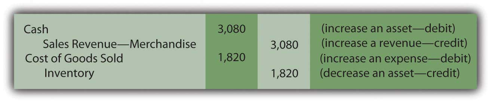
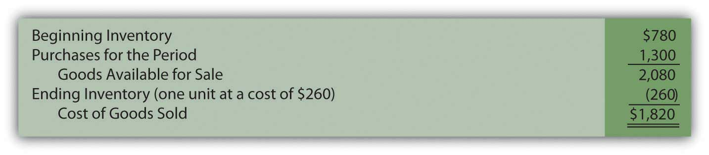

Joe introduces Chapter 8 "How Does a Company Gather Information about Its Inventory?" and speaks about the course in general.
At the end of this section, students should be able to meet the following objectives:
Question: The asset section of the February 28, 2009, balance sheet produced by Best Buy Co. Inc. reports net accounts receivable of $1.868 billion. Based on discussions in the previous chapter, a decision maker should know that this figure reflects net realizable value—the estimation by officials of the amount of cash that will be collected from the receivables owed to the company by its customers. Knowledge of financial accounting rules allows an individual to understand the information being conveyed in a set of financial statements.
As is common, the next account that appears on Best Buy’s balance sheet is inventory, all the items held on that date that were acquired for sales purposes—televisions, cameras, computers, and the like. The figure disclosed by the company for this asset is $4.753 billion. Does this balance also indicate net realizable value—the cash expected to be generated from the company’s merchandise—or is different information reflected? On a balance sheet, what does the amount reported for inventory represent?
Answer: The challenge of analyzing the various assets reported by an organization would be reduced substantially if every monetary number disclosed the same basic information, such as net realizable value. However, over the decades, virtually every asset has come to have its own individualized method of reporting, one created to address the special peculiarities of that account. Thus, the term “presented fairly” often has a totally different meaning for each asset. Reporting accounts receivables, for example, at net realizable value has no impact on the approach that has come to be accepted for inventoryA current asset bought or manufactured for the purpose of selling in order to generate revenue..
The reporting of inventory is especially unique because the reported balance is not as standardized as with accounts receivable. For example, under certain circumstances, the balance sheet amount shown for inventory actually can reflect net realizable value. Several other meanings for the reported balance, though, are more likely. The range of accounting alternatives encountered in analyzing this asset emphasizes the importance of reading the notes included with financial statements rather than fixating on a few reported numbers alone. Without careful study of the additional disclosures, a decision maker simply cannot know what Best Buy means by the $4.753 billion figure reported for “merchandise inventories.” Another company could show the identical number for its inventory and still be reporting considerably different information.
Question: Accounting for inventory seems particularly complicated. A logical approach to the coverage here is needed. In coming to understand the reporting methodology that is utilized with this asset, where should the discussion begin? What is the first issue that an accountant faces in establishing an appropriate balance for inventory so that it is reported in conformity with U.S. GAAP?
Answer: The study of inventory and its financial reporting should begin by defining “cost.” In acquiring each item, officials make the decision to allocate a certain amount of scarce resources. What did the company expend to obtain its inventory? That is a reasonable question to address.
To illustrate, assume that a sporting goods company (Rider Inc.) acquires a new bicycle (Model XY-7) to sell. Rider’s accounting system should be designed to determine the cost of this piece of inventory, the sacrifice that the company chose to make to obtain the asset. Assume that a price of $250 was charged by the manufacturer (Builder Company) for the bicycle and the purchase was made by Rider on credit. Rider spends another $9 to transport the item from the factory to one of its retail stores and $6 to have the pieces assembled so that the bicycle can be displayed in the salesroom for customers to examine.
In accounting for the acquisition of inventory, cost includes all normal and necessary amounts incurred to get the item into the condition and position to be sold. Hence, by the time this bicycle has reached Rider’s retail location and been readied for sale, its cost to the sporting goods company is $265.
Figure 8.1 Maintaining a Cost for Inventory Item
The charges for delivering this merchandise and assembling the parts were included in the cost of the asset (the traditional term for adding a cost to an asset account, capitalizationThe process of recording as an asset all the normal and necessary costs associated with getting the asset into position and condition to be sold (in the case of inventory) or used to help generate revenue (in the case of noncurrent assets, such as land, buildings, and equipment)., was introduced previously). Both of these expenditures were properly viewed as normal and necessary to get the bicycle into the condition and position to be resold. Interestingly, any amount later expended to transport the merchandise from the store to a buying customer is recorded as an expense rather than as an asset because that cost is incurred after the sale takes place. At that point, no further future value exists since the merchandise has already been sold.
Occasionally, costs arise where the “normal and necessary” standard may be difficult to apply. To illustrate, assume that the president of a store that sells antiques buys a 120-year-old table for resell purposes. When the table arrives at the store, another $300 must be spent to fix a scratch cut across its surface. Should this added cost be capitalized (added to the reported balance for inventory) or expensed? The answer to this question is not readily apparent and depends on ascertaining all relevant facts. Here are two possibilities.
Scenario one: The table was acquired by the president with the knowledge that the scratch already existed and needed to be fixed prior to offering the merchandise for sale. In that case, repair is a normal and necessary activity to put the table into condition necessary to be sold. The $300 is capitalized, recorded as an addition to the cost of the inventory.
Scenario two: The table was bought without the scratch but was damaged when first moved into the store through an act of employee carelessness. The table must be repaired but the scratch was neither normal nor necessary. This cost could have been avoided. The $300 is not capitalized but rather reported as a repair expense by the store.
As discussed in an earlier chapter, if the accountant cannot make a reasonable determination as to whether a particular cost qualifies as normal and necessary, the conservatism principle that underlies financial accounting requires the $300 to be reported as an expense. When in doubt, the alternative that makes reported figures look best is avoided so that decision makers are not encouraged to be overly optimistic about the company’s financial health and future prospects.
Link to multiple-choice question for practice purposes: http://www.quia.com/quiz/2092919.html
Question: When inventory is acquired, some sellers are willing to accept a reduced amount to encourage fast payment—an offer that is called a cash discount (or a sales discount or purchases discount depending on whether the seller or the buyer is making the entry). Cash becomes available sooner so that the seller can quickly put it back into circulation to make more profits. In addition, the possibility that a receivable will become uncollectible is reduced if the balance due is not allowed to get too old. Tempting buyers to make quick payments to reduce their cost is viewed as a smart business practice by many sellers.
To illustrate, assume the invoice received by the sporting goods company (Rider) for the above bicycle indicates the proper $250 balance due but also includes the notation: 2/10, n/45. What message is being conveyed by the seller? How do cash discounts impact the reporting of inventory?
Answer: Sellers—such as Builder Company in this example—can offer a wide variety of discount terms to encourage speedy payment. One such as 2/10, n/45 is generally read “two ten, net 45.” It informs the buyer that a 2 percent discount can be taken if the invoice is paid by the tenth day. Any net amount that remains unpaid (after merchandise returns or partial cash payments) is due on the forty-fifth day. Rider has the option to pay $245 for the bicycle within ten days of receiving the invoice by taking advantage of the $5 discount ($250 × 0.02). Or the sporting goods company can wait until the forty-fifth day but then is responsible for the entire $250.
Many companies automatically take advantage of these discounts as a matter of policy because of the high rate of interest earned. If Rider does not submit the money in ten days, it must pay an extra $5 in order to hold onto $245 for an additional thirty-five days. This delay equates to a 2.04 percent interest rate over just that short period of time ($5/$245 = 2.04 percent [rounded]). There are over ten thirty-five-day periods in a year. Paying the extra $5 is the equivalent of an annual interest rate in excess of 21 percent.
365 days per year/35 days holding the money = 10.43 time periods per year 2.04% (for 35 days) × 10.43 time periods equals a 21.28% rate for a yearThat substantial rate of interest is avoided by making the early payment, a decision chosen by most companies unless they are experiencing serious cash flow difficulties.
Assuming that Rider avails itself of the discount offer, the capitalized cost of the inventory is reduced to $260.
Figure 8.2 Cost of Inventory Reduced by Cash Discount

Link to multiple-choice question for practice purposes: http://www.quia.com/quiz/2092883.html
Any discussion of the reporting of inventory begins with the calculation of cost, the amount spent to obtain the merchandise. Cost encompasses all payments that are considered normal and necessary to get the merchandise into the condition and possession to be sold. Any other expenditures are expensed as incurred. Cash discounts are often offered to buyers to encourage quick payment. Taking advantage of such discounts is usually a wise decision because they effectively save interest at a relatively high rate.
At the end of this section, students should be able to meet the following objectives:
Question: In an earlier chapter, differences between a perpetual inventory system and a periodic inventory system were discussed briefly. A perpetual system—which frequently relies on bar coding and computer scanning—maintains an ongoing record of all items present. How is the recording of an inventory purchase carried out in a perpetual system?
Answer: When a perpetual inventory systemAccounting system that maintains an ongoing record of all inventory items; records increases and decreases in inventory accounts as they occur as well as the cost of goods sold to date. is in use, all additions and reductions are monitored in the inventory T-account. Thus, theoretically, the balance found in that general ledger account at any point in time will be identical to the merchandise physically on hand. In actual practice, recording mistakes as well as losses such as theft and breakage create some (hopefully small) discrepancies. Consequently, even with a perpetual system, the inventory records must be reconciled occasionally with the items actually present to reestablish accuracy.
In a perpetual inventory system, the maintenance of a separate subsidiary ledger showing data about the individual items on hand is essential. On February 28, 2009, Best Buy reported inventory totaling $4.753 billion. However, the company also needs specific information as to the quantity, type, and location of all televisions, cameras, computers, and the like that make up this sum. That is the significance of a perpetual system; it provides the ability to keep track of the various types of merchandise. The total cost is available in the inventory T-account but detailed data about the composition (the quantity and frequently the cost) of merchandise physically held is maintained in a subsidiary ledger where an individual file can be available for each item.
Below are the journal entries that Rider Inc. (the sporting goods company) makes for its purchase of a bicycle to sell (Model XY-7) if a perpetual inventory system is utilized. A separate subsidiary ledger file (such as shown previously) is also established to record the quantity and cost of the specific items on hand.
The assumption is made here that the transportation and assembly charges are paid in cash. Furthermore, the actual purchase is initially on credit with payment made during the ten-day discount period. The bicycle is recorded at $250 and then reduced by $5 at the time the discount is taken. This approach is known as the “gross method of reporting discounts.” As an alternative, companies can choose to anticipate taking the discount and simply make the initial entry for the $245 expected payment. This option is referred to as the “net method of reporting discounts.”
Figure 8.3 Rider Inc.—Journal Entries—Perpetual Inventory SystemIf the net method is applied by Rider Inc. the initial purchase entry is recorded as $245. Later, if the discount is not taken, the additional cost of $5 is recorded as a loss or an expense rather than as a capitalized cost of the inventory because it is not normal and necessary to pay the extra amount.

After posting these entries, the inventory T-account in the general ledger reports a net cost of $260 ($250 – $5 + $9 + $6) and the separate subsidiary ledger shown previously indicates that one Model XY-7 bicycle is on hand with a cost of $260.
Link to multiple-choice question for practice purposes: http://www.quia.com/quiz/2092884.html
Question: In a periodic system, no attempt is made to keep an ongoing record of a company’s inventory. Instead, the quantity and cost of merchandise is only determined periodically as a preliminary step in preparing financial statements. How is the actual recording of an inventory purchase carried out in a periodic system?
Answer: If a company uses a periodic inventory systemAccounting system that does not maintain an ongoing record of all inventory items; instead, ending inventory is determined by a physical count so that a formula (beginning inventory plus purchases less ending inventory) can be used to determine cost of goods sold., neither the cost nor the quantity of the specific inventory items on hand is monitored. These data are not viewed by company officials as worth the cost and effort required to gather it. However, transactions still take place and a record must be maintained of the costs incurred. This information is eventually used for financial reporting but also—more immediately—for control purposes. Regardless of the recording system, companies want to avoid spending unnecessary amounts on inventory as well as tangential expenditures, such as transportation and assembly. If the accounting system indicates that a particular cost is growing too rapidly, alternatives can be investigated before the problem becomes serious. Periodic systems are designed to provide such information through the use of separate general ledger T-accounts for each cost incurred.
Assume that Rider uses a periodic inventory system. Its journal entries for the acquisition of the Model XY-7 bicycle are as follows. No subsidiary ledger is maintained. The overall cost of the inventory item is not readily available and the quantity (except by visual inspection) is unknown. At any point in time, company officials do have access to the amounts spent for each of the individual costs (such as transportation and assembly) for monitoring purposes.
Because these costs result from the acquisition of an asset that eventually becomes an expense when sold, they follow the same debit and credit rules as those accounts.
Figure 8.4 Rider Inc.—Journal Entries—Periodic Inventory System
Note that the choice between using a perpetual and periodic system impacts the following:
Regardless of the system, Rider holds one piece of inventory with a cost of $260. The decision as to whether to utilize a perpetual or periodic system is based on the added cost of the perpetual system and the difference in the information generated for use by company officials. The company’s inventory is not physically affected by the method selected.
Link to multiple-choice question for practice purposes: http://www.quia.com/quiz/2092920.html
Link to multiple-choice question for practice purposes: http://www.quia.com/quiz/2092921.html
Question: Given the availability of sophisticated computers, do any companies still use periodic inventory systems? With bar coding and the advanced state of technology, is periodic inventory simply an antiquated system that is no longer found in actual practice?
Answer: Obviously, in this computer age, perpetual inventory systems have come to dominate because they provide valuable information to company officials. However, some types of businesses will simply never change from the simplicity of a periodic system.
A beauty salon or barber shop, for example, where services are rendered but a small amount of inventory is kept on hand for occasional sales, would certainly not need to absorb the cost of a perpetual system. Visual inspection can alert the employees as to the quantity of inventory on hand.
Restaurants, sandwich shops, ice cream stores, and the like might well choose to use a periodic system because purchasing usually takes place at the establishment where quantities are easy to observe and manage. The information provided by a perpetual system does not necessarily provide additional benefit.
“Dollar stores,” which have become particularly prevalent in recent years, sell large quantities of low-priced merchandise. Goods tend to be added to a store’s inventory as they become available rather than based on any type of managed inventory strategy. Again, officials must decide whether keeping up with the inventory on hand will impact their decision making. If not, the cost of a perpetual system is unnecessary.
Perhaps, most importantly, some companies often use a hybrid system where the units on hand and sold are monitored with a perpetual system. However, to reduce cost, the dollar amounts are only determined using a periodic system at the end of the year to prepare financial statements. In that way, the company gains valuable information (the number of units on hand) at a reduced amount.
Perpetual inventory systems are designed to maintain updated figures for inventory as a whole as well as for individual items. Separate subsidiary ledger accounts show the balance for each type of inventory so that company officials can know the size, cost, and composition of the merchandise. A periodic system is cheaper to operate because no attempt is made to monitor inventory balances (in total or individually) until financial statements are to be prepared. A periodic system does allow a company to control costs by keeping track of the individual inventory costs as they are incurred.
At the end of this section, students should be able to meet the following objectives:
Question: Rider Inc. (the sporting goods company) buys a bicycle for resell purposes and records the transaction using either a perpetual or periodic system. When should an inventory purchase be recorded? Assume, for example, that Builder Company (the manufacturer of this bicycle) is located in Wisconsin, whereas the retail store operated by Rider is in Kentucky. Delivery takes several days at a minimum. The precise moment for recording the transaction is probably not critical except near the end of the year when the timing of journal entries can impact the balances to be included on the financial statements.
To illustrate, assume this bicycle is ordered by Rider Inc. on December 27 of Year One. It is shipped by Builder Company from Wisconsin on December 29 of Year One and arrives at the retail store on January 4 of Year Two. When Rider produces its financial statements for Year One, should the inventory cost and related payable be included even though the bicycle was not physically received until Year Two?
Answer: Documents prepared in connection with shipments made from a seller to a buyer are normally marked with an “FOB” point. FOB stands for “Free On Board” (a traditional maritime term that has gained a wider use over the years) and indicates when legal title to property is transferred. That is the moment that the bicycle is assumed to be conveyed from one party to the other. It signifies the appropriate date for recording.
In this illustration, if Builder Company specifies that the sale of this bicycle is made “FOB shipping pointTerms of sale stipulating that legal title to shipped goods passes to the buyer at the time of shipment so that buyer is responsible for transportation costs and any damages or losses in transit.” and Rider Inc. agrees to this condition, the transaction occurs on December 29, Year One, when the bicycle leaves the seller. Consequently, both the asset and the liability appear on the December 31, Year One, balance sheet prepared by the buyer while Builder records sale revenue in Year One. However, if the contract states that the transaction is made “FOB destinationTerms of sale stipulating that legal title to shipped goods passes to the buyer when they arrive at the final destination so that the seller is responsible for transportation costs and any damages or losses in transit.,” the seller maintains legal ownership until the bicycle arrives at the store on January 4, Year Two. Neither party records the transaction until that time. Near the end of a reporting period, account balances can clearly be altered by the FOB designation.
The FOB point is often important for two other reasons.
Link to multiple-choice question for practice purposes: http://www.quia.com/quiz/2092922.html
Question: When a sale is made so that inventory is surrendered, the seller reports an expense that has previously been identified as “cost of goods sold” or “cost of sales.” For example, Best Buy reported “cost of goods sold,” for the year ended February 28, 2009, as $34.017 billion. When should cost of goods sold be determined?
To illustrate, assume that Rider Inc. begins the current year holding three Model XY-7 bicycles costing $260 each—$780 in total. During the period, another five units of this same model are acquired, again for $260 apiece or $1,300 in total.In this illustration, each bicycle in the company’s inventory has the same cost: $260. At this introductory stage, utilizing a single cost for all items eliminates a significant theoretical problem concerning the flow of costs, one that will be discussed in detail in a subsequent chapter.Eventually, a customer buys seven of these bicycles for her family and friends paying cash of $440 each or $3,080 in total. No further sales are made of this model. At the end of the period, a single bicycle remains (3 + 5 – 7). One is still in stock while seven have been sold. What is the proper method of recording the company’s cost of goods sold?
Answer: Perpetual inventory system. The acquisition and subsequent sale of inventory when a perpetual system is in use was demonstrated briefly in an earlier chapter. The accounting records maintain current balances so that officials are cognizant of (a) the amount of merchandise being held and (b) the cost of goods sold for the year to date. These figures are readily available in general ledger T-accounts. In addition, separate subsidiary ledger balances are usually established for the individual items in stock, showing the quantity on hand and its cost. When each sale is made, the applicable cost is reclassified from the inventory account on the balance sheet to cost of goods sold on the income statement. Simultaneously, the corresponding balance in the subsidiary ledger is lowered.
In this example, bicycles had been acquired by Rider Inc. and seven of them, costing $260 each (a total of $1,820), are sold to a customer for $440 apiece or $3,080. When a perpetual system is in use, two journal entries are prepared at the time of this transaction: one for the sale and a second to shift the cost of the inventory from asset to expense.
Figure 8.5 Journal Entries for Sale of Seven Model XY-7 Bicycles—Perpetual Inventory System
Removing $1,820 leaves an inventory balance of $260 ($780 + $1,300 – $1,820) representing the cost of the one remaining unit. The $1,260 difference between revenue and cost of goods sold for this sale ($3,080 minus $1,820) is the markup (also known as “gross profitDifference between sales and cost of goods sold; also called gross margin or markup.” or “gross margin”).
Periodic inventory systemAccounting system that does not maintain an ongoing record of all inventory items; instead, ending inventory is determined by a physical count so that a formula (beginning inventory plus purchases less ending inventory) can be used to determine cost of goods sold.. In contrast, a periodic system monitors the various inventory expenditures but makes no attempt to keep up with the merchandise on hand or the cost of goods sold during the year. Although cheap to create and operate, the information available to company officials is extremely limited.
At the time the sale of seven bicycles takes place, the first journal entry shown above is still made to recognize the revenue. However, the second entry is omitted if a periodic system is in use. Cost of goods sold is neither calculated nor recorded when a sale occurs. Thus, the inventory balance remains unadjusted throughout the year. Eventually, whenever financial statements are prepared, the amount to be reported for the asset (inventory) must be determined along with the expense (cost of goods sold) for the entire period.
Because updated totals are not maintained, the only accounts found in the general ledger relating to inventory show balances of $780 (beginning balance) and $1,300 (purchases).
| General Ledger Balances—Periodic Inventory System | |
|---|---|
| Inventory (beginning balance remains unadjusted during the period): | 3 units at $260 each or $780 |
| Purchases (total inventory costs incurred during the period; for this example, the balance here includes the invoice price, sales discount, transportation-in, assembly, and the like although they would have been recorded separately): | 5 units at $260 each or $1,300 |
Based on this information, total inventory available for to be sold by Rider Inc. during this period is eight units costing $2,080 ($780 plus $1,300).
When using a periodic system, cost of goods sold is computed as a prerequisite to preparing financial statements. Inventory on hand is counted (a process known as a “physical inventoryA count of the inventory on hand; necessary for reporting purposes when using a periodic system but also required for a perpetual system to ensure the accuracy of the records.”) and all units that are no longer present are assumed to have been sold. The amount of missing inventory is determined in this process. The figure is then reported as the company’s cost of goods sold for the period. Because complete inventory records are not available, any units that are lost, stolen, or broken cannot be separately derived. All merchandise that is no longer on hand is included within cost of goods sold.
In this example, a physical inventory count will be taken by the employees of Rider Inc. on or near the last day of the year so that financial statements can be produced. Because eight bicycles (Model XY-7) were available during the year but seven have now been sold, one unit—costing $260—remains (if no accident or theft has occurred). This amount is the inventory figure that appears in the asset section of the balance sheet.
Cost of goods sold is then computed by the following formula.
Figure 8.6 Computation of Cost of Goods Sold in a Periodic SystemThe Purchases figure here could have also been shown by displaying the various cost components, such as the invoice price, purchases discount, transportation-in, and assembly. That breakdown is important for internal decision making and control but probably of less interest to external parties.
In a periodic system, three costs are used to arrive at the amount reported as a company’s cost of goods sold. It is important to understand how each of these figures is derived.
Link to multiple-choice question for practice purposes: http://www.quia.com/quiz/2092885.html
Question: In a perpetual inventory system, cost of goods sold is determined at the time of each sale. Figures retained in a subsidiary ledger provide the cost of the specific item being surrendered so that an immediate reclassification from asset to expense can be made.
With a periodic system, cost of goods sold is not calculated until financial statements are prepared. The beginning inventory balance (the ending amount from the previous year) is combined with the total acquisition costs incurred this period. Merchandise still on hand is counted and its cost is determined. All missing inventory is assumed to reflect the cost of goods sold. When a periodic inventory system is in use, how are both the ending inventory and cost of goods sold for the year physically entered into the accounting records? These figures have not been recorded on an ongoing basis so the general ledger must be updated to agree with the reported balances.
Answer: In the bicycle example, opening inventory for the period was comprised of three items costing $780. Another five were then bought for $1,300. The total cost of these eight units is $2,080. Because the financial impact of lost or broken units cannot be ascertained in a periodic system, the entire $2,080 is assigned to either ending inventory (one unit at a cost of $260) or cost of goods sold ($780 + $1,300 – $260 or $1,820). There is no other account in which to record inventory costs in a periodic system. The goods are assumed to either be on hand or have been sold.
For a periodic inventory system, a year-end adjusting entry is set up so that these computed amounts are reflected as the final account balances.
Figure 8.7 Adjusting Entry—Recording Inventory and Cost of Goods Sold as Determined in Periodic Inventory SystemAs mentioned previously, if separate T-account balances are established for cost components such as transportation-in, assembly costs, and the like, they must be included in this entry rather than just a single Purchases figure.

Note that the reported costs on the financial statements ($260 for ending inventory and $1,820 for cost of goods sold) are identical under both perpetual and periodic systems. However, as will be demonstrated in the next chapter, this agreement does not always exist when inventory items are acquired during the year at differing costs.
The legal conveyance of inventory from seller to buyer establishes the timing for recording and is based on the FOB point specified. This designation also identifies the party responsible for transportation costs and items damaged while in transit. In contrast, the recording of cost of goods sold depends on the inventory system used. For a perpetual system, the reclassification of an item from inventory to expense occurs at the time of each sale. A periodic system makes no attempt to monitor inventory totals; thus, cost of goods sold is unknown until the preparation of financial statements. The expense is found by adding the beginning inventory to the purchase costs for the period and then subtracting ending inventory. A year-end adjusting entry then updates the various general ledger accounts.
At the end of this section, students should be able to meet the following objectives:
Question: In the example of Rider Inc., Model XY-7 bicycles have been bought and sold and one unit remains in stock at the end of the year. The cost of this model has held steady at $260. However, its market value is likely to differ from that figure.
Assume that, because of the sales made during the period, company officials believe that a buyer will eventually be found to pay $440 for this last bicycle. Is inventory always reported on a balance sheet at historical cost or is market (or fair) value ever taken into consideration? Should this bicycle be shown as an asset at $260, $440, or some other pertinent figure?
Answer: Under normal conditions, market value is rarely relevant in the reporting of inventory. For Rider Inc. this bicycle will most likely appear as an asset at its cost of $260 until sold. Value is such a subjective figure that it is usually ignored in reporting inventory. The company has no reliable proof that the bicycle will bring in $440 until a sale actually occurs. The conservative nature of accounting resists the temptation to inflate reported inventory figures based purely on the anticipation of a profitable transaction at some point in the future.
An exception to this rule becomes relevant if the value of inventory falls below cost. Once again, the conservatism inherent in financial accounting is easily seen. If market value remains greater than cost, no change is made in the reported balance until a sale occurs. In contrast, if the value drops so that inventory is worth less than cost, a loss is recognized immediately. Accountants often say that losses are anticipated but gains are not. As a note to the June 24, 2009, financial statements for Winn-Dixie Stores states, “Merchandise inventories are stated at the lower-of-cost-or-market” (emphasis added). Whenever inventory appears to have lost value for any reason, the accountant compares the cost of the item to its market value and the lower figure then appears on the balance sheet.
Question: When applying the lower-of-cost-or-market approach to inventory, how does the owner of the merchandise ascertain market value?
Answer: The practical problem in applying this rule arises from the difficulty in ascertaining an appropriate market value. There are several plausible ways to view the worth of any asset. For inventory, there is both a “purchase value” (replacement cost—the amount needed to acquire the same item again at the present time) and a “sales value” (net realizable value—the amount of cash expected from an eventual sale). When preparing financial statements, if either of these amounts is impaired, recognition of a loss is likely. Thus, the accountant must watch both values and be alert to any potential problems.
Purchase Value. In some cases, often because of bad timing, a company finds that it has paid an excessive amount for inventory. Usually as the result of an increase in supply or a decrease in demand, replacement cost drops after an item is acquired. To illustrate, assume that Builder Company—the manufacturer of bicycle Model XY-7—has trouble selling the expected quantity of this style to retail stores because the design is not viewed as attractive. Near the end of the year, Builder reduces the wholesale price offered for this model by $50 in hopes of stimulating sales. Rider Inc. bought a number of these bicycles earlier at a total cost of $260 each but now, before the last unit is sold, could obtain an identical product for only $210. The bicycle held in Rider’s inventory is literally worth less than what the company paid for it. The purchase value, as demonstrated by replacement cost, has fallen to a figure lower than its historical cost.
When replacement cost for inventory drops below the amount paid, the lower (more conservative) figure is reported on the balance sheet and the related loss is recognized on the income statement. In applying lower-of-cost-or-marketConservative approach to inventory valuation used when merchandise values have decreased; a reduction in the asset is recorded to reflect the decline in value if it falls below cost., the remaining bicycle is now reported by Rider Inc. at its purchase value. A loss of $50 reflects the reduction in the reported inventory account from $260 to $210.
Sales value. Inventory also has a sales value that can, frequently, be independent of replacement cost. The sales value of an item can fall for any number of reasons. For example, technological innovation will almost automatically reduce the amount that can be charged for earlier models. This phenomenon can be seen whenever a new digital camera or cell phone is introduced to the market. Older items still in stock often must be discounted significantly to attract buyers. Similarly, changes in fashions and fads can hurt the sales value of certain types of inventory. Swim suits usually are offered at reduced prices in August and September as the summer season draws to a close. Damage can also impact an owner’s ability to recoup the cost of inventory. Advertised sales tempt buyers to stores by offering scratched and dented products, such as microwaves and refrigerators, at especially low prices.
For accounting purposes, the sales value of inventory is normally defined as its estimated net realizable value. As discussed in the previous chapter, this figure is the amount of cash expected to be derived from an asset. For inventory, net realizable value is the anticipated sales price less any cost required so that the sale will occur. For example, the net realizable value of an older model digital camera might be the expected amount a customer will pay after money is spent to advertise the product. The net realizable value for a scratched refrigerator is likely to be the anticipated price of the item less the cost of any repairs that must be made prior to the sale.
As with purchase value, if the sales value of an inventory item falls below its historical cost, the lower figure is reported along with a loss to mirror the impact of the asset reduction.
Question: Inventory records are maintained at the historical cost of each item. For reporting purposes, this figure is utilized unless the market value is lower. A reduction in value can result because of a drop in replacement cost (a purchase value) or in net realizable value (a sales value). How is the comparison of cost and market value actually made when inventory is reported?
Assume that Rider Inc. is currently preparing financial statements and holds two bicycles in ending inventory. Model XY-7 cost the company $260 while Model AB-9 cost $380. As mentioned, Model XY-7 now has a replacement cost of only $210. Because of market conditions, the exact sales value is uncertain. The other unit, Model AB-9, has been damaged and can only be sold for $400 after $50 is spent for necessary repairs. What should Rider report for its asset inventory?
Answer: As a preliminary step in preparing financial statements, a comparison of the cost and market value of the inventory is made. For Rider, both reported cost amounts here must be reduced and the inventory account shown as $560.In applying the lower-of-cost-or-market to inventory, the comparison can be made on an item-by-item basis. For example, XY-7 can be valued based on cost and market value and then, separately, a similar determination can be made for AB-9. A company can also group its inventory (all bicycles, for example, might comprise one group that is separate from all motorcycles) and report the lower amount determined for each of these groups. A third possibility is to sum the cost of all inventory and make a single comparison of that figure to the total of all market values. U.S. GAAP does not specify a mechanical approach to use in applying lower-of-cost-or-market value. However, the market value used for the first item is its purchase value (replacement cost of $210) whereas the market value for the second is the item’s sales value of $350 (net realizable value of $400 minus $50). A problem with either value can lead to the reduction of the reported asset causing the recognition of a loss.
Figure 8.8 Recognition of a Loss on Impaired Inventory Value
Rider Inc. reports its inventory at the conservative $560 amount on its balance sheet with an $80 loss ($640 – $560) appearing in the income statement for this period.
Link to multiple-choice question for practice purposes: http://www.quia.com/quiz/2092886.html
Following is a continuation of our interview with Robert A. Vallejo, partner with the accounting firm PricewaterhouseCoopers.
Question: According to U.S. GAAP, in applying lower-of-cost-or-market to inventory, the determination of market value can be either net realizable value or replacement cost depending on whether a sales value or a purchases value is impaired. This process has been used in the United States for decades. How does International Financial Reporting Standards (IFRS) handle this issue? When a company begins to report its financial statements based on IFRS, how will the comparison of cost to market be made for inventory balances?
Rob Vallejo: International Accounting Standards 2, Inventories (IAS 2) states that inventories should be measured at the lower of cost and net realizable value. Net realizable value is defined as the anticipated sales price of the item (in the ordinary course of business) reduced by the estimated costs to complete the item and any estimated costs needed to make the sale. Replacement cost is not taken into consideration. In practice, because replacement cost is not often an issue for U.S. companies, the methodology commonly used for valuing inventory under U.S. GAAP will continue to be utilized to comply with IFRS. Therefore, I do not expect any significant differences in this area of financial reporting (with the exception of some very industry specific circumstances) when the switch to IFRS is made. However, IFRS does allow reversals of previous write-downs if appropriate.
Inventory is traditionally reported on a company’s balance sheet at its historical cost. However, reductions can be made based on applying the conservative lower-of-cost-or-market approach. In some cases, purchase value is in question if the item’s replacement cost has dropped since the date of acquisition. For other inventory items, net realizable value (expected sales price less any costs necessary to sale) may become less than cost because of changes in fads or technology or possibly as a result of damage. Consequently, the reported inventory figure should be reduced if either of these market values is below cost.
At the end of this section, students should be able to meet the following objectives:
Question: In a periodic inventory system, a physical count is always taken at or very near the end of the fiscal year. This procedure is essential. There is no alternative method for determining the final inventory figure and, hence, the cost of goods sold for the period. When a company uses a perpetual system, is a count of the goods on hand still needed since both the current inventory balance and cost of goods sold are maintained and available in the accounting records?
Answer: A physical inventory is necessary even if a company has invested the effort and cost to install a perpetual system. Goods can be lost, broken, or stolen. Errors can occur in the record keeping. Thus, a count is taken on a regular basis simply to ensure that the subsidiary and general ledger balances are kept in alignment with the actual items held. Unless differences become material, this physical inventory can take place at a convenient time rather than at the end of the year. For example, assume that a company sells snow ski apparel. If a perpetual system is in use, the merchandise could be inspected and counted by employees in May when quantities are low and damaged goods easier to spot.
An adjustment is necessary when the count does not agree with the perpetual inventory balance. To illustrate, assume that company records indicate that sixty-five ski jackets are currently in stock costing $70 apiece. The physical inventory finds that only sixty-three items are actually on hand. The inventory account must be reduced (credited) by $140 to mirror the shortfall (two missing units at $70 each).
The other half of the adjusting entry depends on the perceived cause of the shortage. For example, officials might have reason to believe that errors took place in the accounting process during the period. When merchandise is bought and sold, recording miscues do occur. Possibly two ski jackets were sold on a busy afternoon. The clerk got distracted and the cost of this merchandise was never reclassified to expense. This type of mistake means that the cost of goods sold figure is too low. The balance reported for these two jackets needs to be moved to the expense account to rectify the mistake.
Figure 8.9 Adjusting Entry—To Bring Perpetual Inventory Records in Line with Physical Count, a Recording Error Is Assumed

Conversely, if differences between actual and recorded inventory amounts occur because of damage, loss, or theft, the reported balance for cost of goods sold should not bear the cost of these items. They were not sold. Instead, a loss occurred.
If the assumption is made here that the two missing jackets were not sold but have been lost or stolen, the following alternative adjustment is appropriate.
Figure 8.10 Adjusting Entry—To Bring Perpetual Inventory Records in Line with Physical Count, Theft or Loss Is Assumed
In practice, when an inventory count is made and the results differ from the amount of recorded merchandise, the exact cause is often impossible to identify. Whether a loss is reported or a change is made in reporting cost of goods sold, the impact on net income is the same. The construction of the adjustment is often at the discretion of company officials. Normally, consistent application from year to year is the major objective.
Question: A periodic system is cheap and easy to operate. It does, though, present some practical problems. Assume that a company experiences a fire, flood, or other disaster and is attempting to gather evidence—for insurance or tax purposes—as to the amount of merchandise that was destroyed. How does the company support its claim? Or assume a company wants to produce interim financial statements for a single month or quarter (rather than a full year) without going to the cost and trouble of taking a complete physical inventory count. If the information is needed, how can a reasonable approximation of the inventory on hand be derived when a periodic system is in use?
Answer: One entire branch of accounting—known as “forensic accountingA branch of accounting specializing in investigating and reporting on situations where important information is limited or unavailable.”—specializes in investigations where information is limited or not available (or has even been purposely altered to be misleading). For example, assume that a hurricane floods a retail clothing store in Charleston, South Carolina. Only a portion of the merchandise costing $80,000 is salvaged.For a full description of forensic accounting, see Frank J. Grippo and J. W. (Ted) Ibex, “Introduction to Forensic Accounting,” The National Public Accountant, June 2003. In trying to determine the resulting loss, the amount of inventory in the building prior to the storm needs to be calculated. A forensic accountant might be hired, by either the owner of the store or the insurance company involved, to produce a reasonable estimate of the merchandise on hand at the time. Obviously, if the company had used a perpetual rather than a periodic system, the need to hire the services of an accounting expert would be less likely unless fraud was suspected.
In some cases, arriving at a probable inventory balance is not extremely complicated even if periodic inventory procedures are utilized. When historical trends can be determined with assurance, a valid estimation of the goods on hand is possible at any point in time without the benefit of perpetual records. For the Charleston store, assume that the general ledger is located after the disaster and the T-account balances provide the following information resulting from the periodic system in use:
Figure 8.11 Estimating Inventory—General Ledger Balances

If no sales had taken place, the inventory on hand would have cost $571,000 as shown by the ledger accounts. Sales did occur prior to the hurricane and a significant amount of merchandise was removed by the customers. However, the $480,000 balance shown in the sales T-account does not reflect the cost of the inventory items that were surrendered. It is a retail amount, the summation of the price charged for all the merchandise sold during the year to date.
To determine the cost of inventory held at the time of the catastrophe, cost of goods sold for the current year has to be approximated and then removed from the $571,000 total. Many companies use a fairly standard markup percentage in setting retail prices. By looking at previously reported balances, the accountant is often able to make a reasonable determination of that markup. For example, assume that in the preceding year, this company reported sales revenue of $500,000 along with cost of goods sold of $300,000 and, hence, gross profit of $200,000. In this earlier period, cost of goods sold was 60 percent of sales revenue ($300,000/$500,000) while gross profit was 40 percent ($200,000/$500,000).
If available evidence does not indicate any significant changes this year in the method used to set retail prices, the accountant can assume that cost of goods sold during the period prior to the storm was about $288,000 ($480,000 sales revenue × 60 percent). Because the cost of all available inventory was $571,000, approximately $283,000 of those goods were still in stock when the hurricane hit Charleston ($571,000 total cost less $288,000 estimated cost of goods sold). This residual figure can then serve as the basis for the insurance or tax claim. Only goods costing $80,000 were saved. Thus, the estimated loss was $203,000 ($283,000 less $80,000).
The biggest obstacle in this type calculation is the validity of the cost and markup percentages. Many companies offer an eclectic variety of products, each with its own specific gross profit. Other companies change their markups frequently based on market conditions. In such cases, determining a reliable percentage can be difficult and the accuracy of the resulting estimation is more questionable.
Link to multiple-choice question for practice purposes: http://www.quia.com/quiz/2092901.html
Although perpetual inventory systems are designed to maintain current account balances, a physical count is still required periodically to update the records for errors, theft, and the like. In addition, knowledge of the amount of inventory on hand is sometimes needed in a periodic system even if complete records are not available. If a loss has occurred due to some type of disaster or if interim financial statements are to be prepared, the inventory balance can be estimated. This computation is based on determining the gross profit percentage using historical data. Cost of goods sold for the period is estimated and then removed from the total inventory available for sale.
Following is a continuation of our interview with Kevin G. Burns.
Question: Gross profit is the sales revenue generated by a company less cost of goods sold. In other words, it is the markup that a company is able to earn from the sale of its inventory. Goods are bought for a price and then sold at a higher value. In analyzing companies, gross profit is often stated as a percentage. A company’s gross profit, for example, might be 37 percent of its sales. When you study a company, how much attention do you pay to changes in gross profit from year to year or differences that exist between one company and another?
Kevin Burns: Actually year to year differences only interest me if there is a significant change. If a company’s gross profit margin increases significantly from one year to the next, my radar is activated. I want to know exactly why that happened. Is it temporary or something significant? If gross profit is that volatile, it could also easily go the other direction in the future. I prefer steady as she goes. Predictability and transparency are very important to me. As for gross profit margins between one company and another, the only way that is significant to me is if they are in the same industry and then only if there are big differences. Most companies in mature industries have similar margins and large differences, again, would make me very suspicious.
Joe talks about the five most important points in Chapter 8 "How Does a Company Gather Information about Its Inventory?".
On February 13, North Carolina Furniture purchases three sofas from a manufacturer for $300 each. The terms of the sale are 2/10 n/45. North Carolina Furniture pays the invoice on February 21. How much did they pay?
Crayson Inc. started the year with $490,000 in beginning inventory. During the year, Crayson purchased an additional $1,060,000 in inventory. At the end of the year, Crayson employees performed a physical count and determined that ending inventory amounted to $450,000. What was Crayson’s cost of goods sold for the year?
Raceway Corporation manufactures miniature cars and racetracks for collectors and enthusiasts. Raceway placed an order for supplies from Delta Inc. on December 1. The sales staff at Delta informed Raceway that the supplies would not be available to ship out until December 22 and Raceway accepted this arrangement. The supplies actually shipped, FOB shipping point, on December 26 and arrived at Raceway’s receiving dock on January 2. On which date should Raceway include the supplies in its inventory?
Which of the following concerning the “lower-of-cost-or-market” rule is not true?
Romulus Company sells maps. At the end of the year, Romulus’s inventory account indicated that it had 2,900 maps of Italy on hand that had originally cost $30 each. An inventory count showed that only 2,875 were actually in ending inventory. What journal entry should Romulus make if management believes the discrepancy is due to errors in the accounting process?
Figure 8.12
Figure 8.13
Figure 8.14

Figure 8.15

Real South Products has $400,000 worth of inventory on hand on January 1. Between January and March 13, Real South purchased an additional $190,000 in inventory and sales of $530,000 had been made. On March 13, Real South’s warehouse flooded and all but $15,000 worth of inventory was ruined. Real South has an average gross profit percentage of 25 percent. What would be the approximate value of the inventory destroyed in the flood?
ConnecTech bought 400 computers in December 20X2 for $300 each. It paid $260 to have them delivered to its store. In January 20X3, ConnecTech sold 220 of the computers for $550 each. ConnecTech uses a perpetual inventory system.
Montez Muffins and More is a bakery located in New York. Montez purchases a great deal of flour in bulk from a wholesaler. The wholesaler offers purchase discounts for fast payment. Montez purchased 600 pounds of flour for $100 on May 1, under terms 2/10 n/30. Determine the amount Montez should pay under the following scenarios:
Racers ATVs sells many makes and models of all terrain vehicles. Racers uses a periodic inventory system. On January 1, Racers had a beginning inventory of AXVs costing $28,600. On January 14, Racers received a shipment of Model AXVs with a purchase price of $14,700 and transportation costs of $400. On May 19, Racers received a second shipment of AXVs with a purchase price of $16,900 and transportation costs of $450. On November 1, Racers received its before-Christmas shipment of AXVs with a purchase price of $27,800 and transportation costs of $750.
Magic Carpets Inc. sells a full line of area rugs, from top quality to bargain basement. Economic conditions have hit the textile industry, and Magic Carpets accountant is concerned that its rug inventory may not worth the amount Magic paid for it. Information about three lines of rugs is found below:
Figure 8.16
Costello Corporation uses a perpetual inventory system. At the end of the year, the inventory balance reported by its system is $45,270. Costello performs an inventory count and determines that the actual ending inventory is $39,780.
Fabulous Fay’s is a boutique clothing store in San Diego. Fay’s uses a perpetual inventory system. In March, Fay’s purchased a type of swimwear designed to be slimming to the wearer. It purchased twenty suits of varying sizes for $40 each and priced them at $120 each. They sold out almost immediately, so Fay purchased forty more suits in April for $40 each and sold thirty-eight of them for $130 each. Again in July, Fay made one more purchase of twenty suits at $40 each and sold fifteen of them for $130 each. Fay decided not to put the rest of her inventory on sale at the end of the summer, but to hold onto it until cruise season started the following winter. She believed she could sell the rest then without having to mark them down.
Nakatobi Company has a warehouse in Fargo, ND. The company utilizes a periodic inventory system. At the beginning of the year, the warehouse contained $369,000 worth of inventory. During the first quarter, Nakatobi purchased another $218,000 worth of inventory and made sales of $450,000. On April 1, a flood hit Fargo and destroyed half of the inventory housed in the warehouse. Nakatobi needs to estimate the value of the inventory for insurance purposes. The only additional information Nakatobi has is that typically its cost of goods sold is 55 percent of sales.
This problem will carry through several chapters, building in difficulty. It allows students to continuously practice skills and knowledge learned in previous chapters.
In Chapter 7 "In a Set of Financial Statements, What Information Is Conveyed about Receivables?", you prepared Webworks statements for July. They are included here as a starting point for August.
Here are Webworks financial statements as of July 31.
Figure 8.17

Figure 8.18

Figure 8.19
The following events occur during August:
a. Webworks decides to begin selling a limited selection of inventory items related to its business. During August, Webworks purchases specialty keyboards for $4,900 on account and flash drives for $3,200 on account with the hopes of selling them to its Web site customers or others who might be interested. Due to the limited amount of inventory, Webworks will use a periodic system. Record these purchases.
b. Webworks purchases supplies worth $100 on account.
c. Webworks starts and completes six more Web sites and bills clients for $2,700.
d. Recall that in July, Webworks received $500 in advance to design two Web sites. Webworks completes these sites during August.
e. Webworks collects $2,400 in accounts receivable.
f. Webworks pays Nancy $600 for her work during the first three weeks of August.
g. In June, Webworks designed a site for Pauline Smith and billed her. Unfortunately, before she could finish paying the bill, Ms. Smith’s business folded. It is unlikely Webworks will collect anything. Record the entry to write off the $100 remaining receivable from Ms. Smith.
h. Webworks sells keyboards for $4,500 and flash drives for $3,000 cash.
i. Webworks pays off its salaries payable from July.
j. Webworks pays off $6,000 of its accounts payable.
k. Webworks receives $100 in advance to work on a Web site for a local dentist. Work will not begin on the Web site until September.
l. Webworks pays Leon salary of $2,000.
m. Webworks pays taxes of $475 in cash.
Required:
A. Prepare journal entries for the above events.
B. Post the journal entries to T-accounts.
C. Prepare an unadjusted trial balance for Webworks for August.
D. Prepare adjusting entries for the following and post them to your T-accounts.
n. Webworks owes Nancy $250 for her work during the last week of August.
o. Leon’s parents let him know that Webworks owes $250 toward the electricity bill. Webworks will pay them in September.
p. Webworks determines that it has $60 worth of supplies remaining at the end of August.
q. Prepaid rent should be adjusted for August’s portion.
r. Webworks is continuing to accrue bad debts at 10 percent of accounts receivable.
s. Webworks performs a count of ending inventory and determines that $1,900 in keyboards and $1,100 in flash drives remain. Record cost of goods sold.
E. Prepare an adjusted trial balance.
F. Prepare financial statements for August.